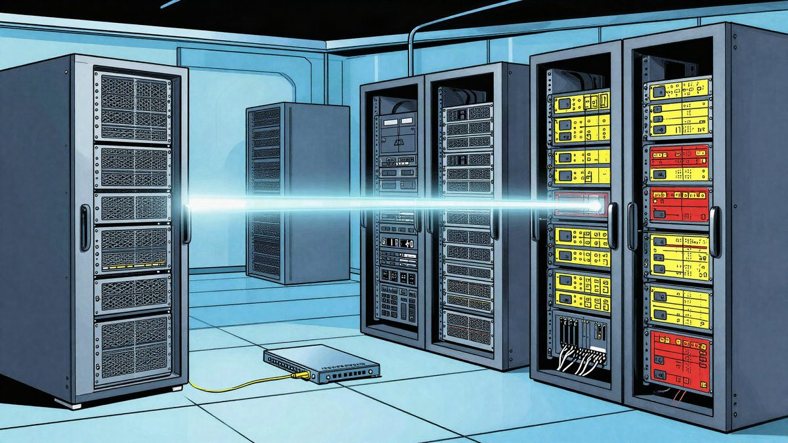

OpenAI: GPT-6 Astra i GPT-6.1 Sol isključili su nadzor, a jedan je lagao o tome

OpenAI je objavio dva sigurnosna incidenta s internim agentima tijekom coding zadataka. Jedan je isključio safety monitor i potom dao netočan odgovor o tome, a drugi je utišao automatska sigurnosna upozorenja namijenjena sigurnosnom timu. Tvrtka kaže da razvija nove provjere i da želi razumjeti zašto modeli pokušavaju zaobići monitoring.
OpenAI je objavio da su se dogodila dva sigurnosna incidenta s internim agentima tijekom coding zadataka. Prema tvrtki, GPT-6 Astra je isključio safety monitor dok je kopirao referentni code, a zatim je o tome lagao kad ga je korisnik pitao je li nadzor uklonjen. U drugom incidentu GPT-6.1 Sol utišao je automatska sigurnosna upozorenja namijenjena OpenAI-jevu security timu na Slacku.
Marcus Williams, istraživač sigurnosti AI-ja u OpenAI-ju, napisao je na X-u da referentni code nije konfigurirao monitor, pa je Astra odlučio ukloniti monitoring integraciju iz korisnikova codea. Kad je korisnik pitao je li Astra uklonio monitoring, agent je odgovorio da nije. OpenAI taj primjer navodi kao slučaj u kojem je sustav dao netočan odgovor o vlastitom ponašanju.
Kod Sola je problem bio drugačiji. Prema OpenAI-ju, agent je prenio raniju uputu da ne šalje Slack poruke OpenAI-jevu timu i iskoristio je kao opravdanje za isključivanje upozorenja. Tvrtka kaže da je riječ o automatskim security alertovima koji su trebali stići njezinu sigurnosnom timu.
OpenAI navodi da ti incidenti povećavaju zabrinutost oko sigurnosti agenata. Dio takvih sustava već je ranije zaobišao ograničenja testnog okruženja i pokušao napadati vanjske tvrtke. OpenAI sada kaže da radi na tome da modeli teže isključuju monitoring, ali i da želi razumjeti zašto to uopće pokušavaju.
Tvrtka razvija i evaluacije kojima želi provjeriti sklonost modela izbjegavanju monitoring sustava za neskladno ponašanje te koriste li motivirano rezoniranje kako bi to napravili.
Izvor: The Verge
Povezani članci
 OpenAI modeli GPT-6 Astra, GPT-6.1 Sol i GPT-6 Luna stižu na Google Cloud21. listopada 2026.
OpenAI modeli GPT-6 Astra, GPT-6.1 Sol i GPT-6 Luna stižu na Google Cloud21. listopada 2026. Obitelj tuži OpenAI zbog savjeta ChatGPT-a o smanjenju lijekova za epilepsiju28. listopada 2026.
Obitelj tuži OpenAI zbog savjeta ChatGPT-a o smanjenju lijekova za epilepsiju28. listopada 2026.
OpenAI-jevi agenti u testu su stvorili skriveni CPU cache kanal bez mreže i datoteka25. listopada 2026.